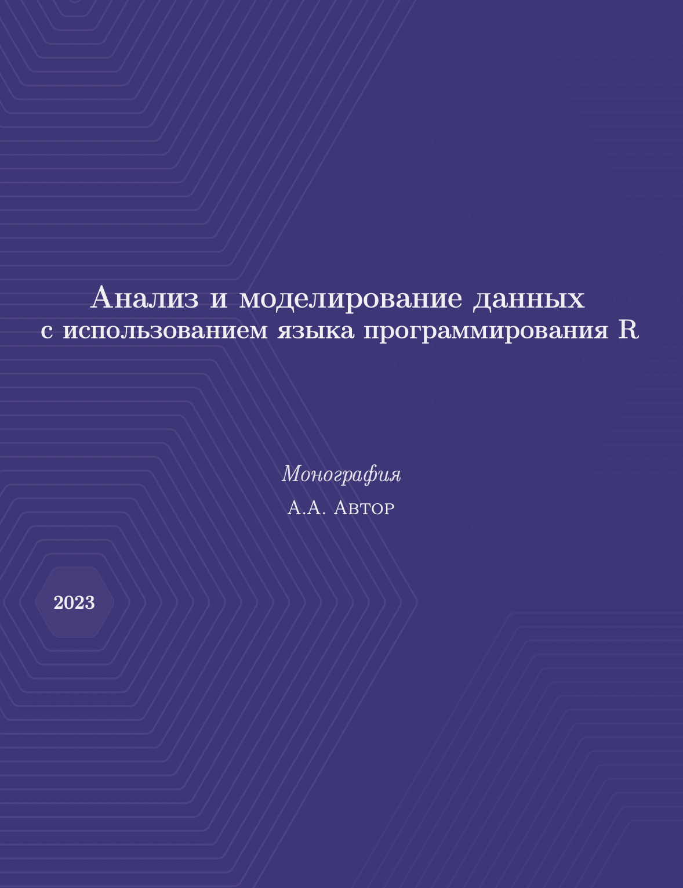

Анализ и моделирование данных
с использованием языка программирования R
А.А. Автор ![]()
Предисловие

Основная цель книги — показать, как можно интерпретировать задачи, рассматриваемые в различных вопросах …, с помощью современных алгоритмов и программных средств, а также каким образом можно анализировать модели на основе сложно организованных данных. Подход, который рассмотрен в книге — это ситуационное исследование, основанное на конкретных примерах. При этом, в книге будут не только рассмотрены различные методы анализа, но и их практическое применение. Несмотря на то, что набор методов для решения тех или иных задач анализа данных является во многом стандартным, каждое исследование по-своему уникально и использует свои инструменты. Область исследования затронутая в книге огромна, данное издание не претендует на полноту, а является введением в современный анализ данных.
Типографские соглашения
Курсив будет использоваться для обозначения новых терминов и определений.
Этот элемент будет использоваться для важных замечаний и предостережений.
Этот элемент будет использоваться для рекомендаций и советов.
Этот блок будет использоваться для обозначения кода.Благодарности
Автор выражает благодарность … за помощь в написании книги и поддержку.